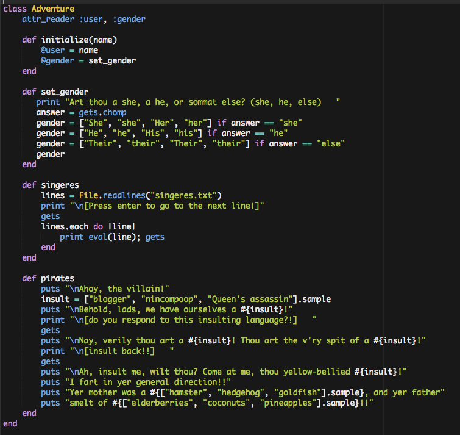
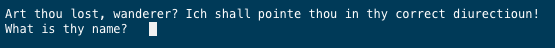

In my pre-Ruby lifetime, I happened to acquire 2 degrees in English literature. The latter one of these was in the exciting field of Renaissance and Early Modern Studies, and I spent most of my time working through late Medieval texts, both pre- and post-Chaucer. Among the many other things I learned about English history, bookmaking, and culture, I learned that there's tons of humor both in the texts of this period as well as created by the researchers that work in it. One of my favorites was Brantley L. Bryant, who wrote a wonderful blog called, appropriately, Geoffrey Chaucer Hath A Blog. If you know your way around Middle English, it's hilarious!
In honor of the fact that I'm spending this weekend at the one of my favorite Renaissance faires, I wrote a Renaissance-ish verbal adventure in Ruby (and I'm enough of a dork that I'm still laughing to myself about it). Here it is.

Ok, let's run it! First, the script welcomes you:

All quiet on the Western front so far...

Someone offers you a choice between pirates, knightes, and singeres? Let's try pirates!

How insulting! Ah well, let's try those minstrels out!

Methinks at this point you can probably tell I'm a Monty Python and the Holy Grail fan.
That's it for today! I'll be adding knightes soon!